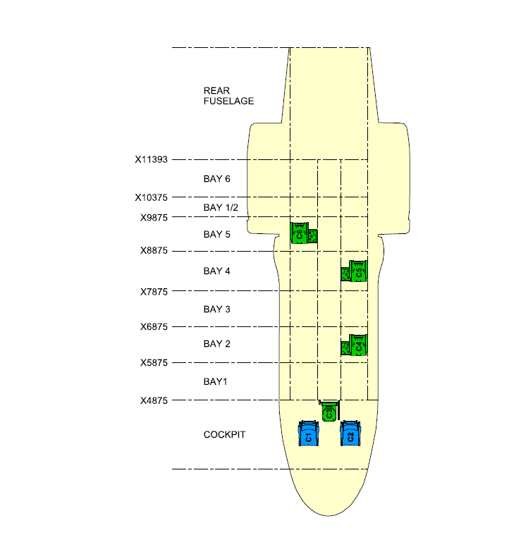
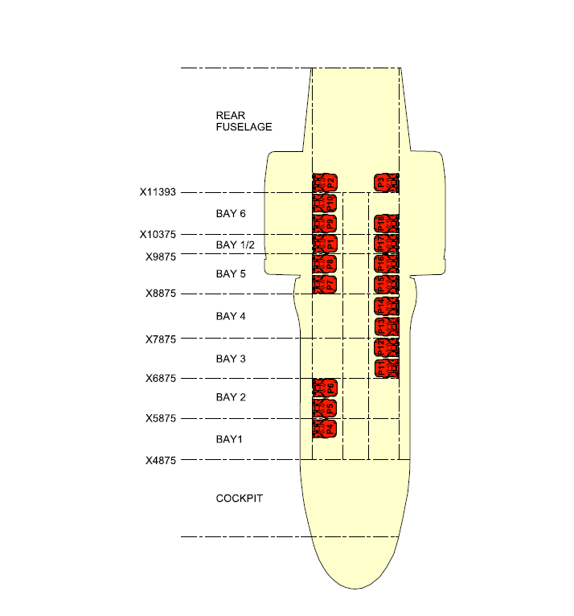

Select the aircraft assigned to this mission.
Mission information persists until cleared. Return the aircraft when the mission is complete. Use Reversionary App if required.
Mission information persists until cleared. Return the aircraft when the mission is complete. Use Reversionary App if required.
Home Select a tail (or SIM/IPT)
Aircraft status:
Available has no active accepted W&B.
Accepted has aircraft data accepted and a W&B in progress.
Signed out has a certified W&B and has not been returned.
Checking Verifying offline files…
Sessions are saved automatically and survive the app being closed. End Session wipes all tails back to defaults.
Tails
Force Return Reason (only if you take a tail that is signed out)
Quick Actions
“Return to Available” is your explicit return action (end-of-day / end-of-crew).
Accept Aircraft Data Establish the starting weight, CG and fuel
Establish the aircraft starting condition.
Confirm the Basic Weight, CG and recorded fuel for the assigned aircraft. Identify any differences between the aircraft as configured and the selected weight record before accepting.
Confirm the Basic Weight, CG and recorded fuel for the assigned aircraft. Identify any differences between the aircraft as configured and the selected weight record before accepting.
Acceptance establishes and locks the starting aircraft state for this session. To change accepted values or Maintenance Exceptions after acceptance, return to Home and use End Session & Clear All.
Which Basic Weight and CG are you using?
Basic Weight (kg)
Basic CG (mm)
Fuel Total from Log (kg)
Initializes the Fuel tab for planning and AUW/CG calculations. Fuel is not included in Operating Weight.
Accepted By — Last Name
Role Config
Configure the aircraft for the required role.
Select a Role Config to apply its Role-Fit Equipment. Choose whether to also load the standard Mission Equipment, Crew Personal Equipment, Crew Complement, Available Seats and Seating Arrangement.
Review and adjust the standard selections in Mission Equipment and Crew, Pax, Patients & Seating to match the actual mission.
Select a Role Config to apply its Role-Fit Equipment. Choose whether to also load the standard Mission Equipment, Crew Personal Equipment, Crew Complement, Available Seats and Seating Arrangement.
Review and adjust the standard selections in Mission Equipment and Crew, Pax, Patients & Seating to match the actual mission.
Envelope & Predicted CG Path
Custom Exceptions · Current sortie only
Record any custom additions, removals or substitutions below. If entries are made, confirm them against aircraft documentation before certifying. No confirmation is required when there are no custom exceptions.
Record additions, removals or substitutions. Choose APPLY to adjust the accepted weight, or ACCOUNTED when the signed change is already included in it. If an entry represents a listed role-fit item, select that item below so it is counted only here. Confirm all entries against aircraft documentation.
Custom exceptions are cleared when the aircraft is returned or the session is ended.
Role Fit — show / hide equipment list
Role-fit changes are reflected immediately in the current calculation and the next PDF output.
Confirm the Mission Equipment actually carried.
Review the standard equipment loaded by the Role Config and add, remove or adjust items to match the mission.
Deploying or RON? Crew RON Personal Equipment is available here but is not loaded by default. Account for Pax Baggage, Deployment Support Equipment, or Special Mission Equipment not defined here in Load Planning.
Review the standard equipment loaded by the Role Config and add, remove or adjust items to match the mission.
Deploying or RON? Crew RON Personal Equipment is available here but is not loaded by default. Account for Pax Baggage, Deployment Support Equipment, or Special Mission Equipment not defined here in Load Planning.
Envelope & Predicted CG Path
Mission Equipment
Stowage Load Summary
Confirm all personnel aboard and their assigned locations.
Review the standard Crew Complement, Available Seats and Seating Arrangement loaded by the Role Config. Add, remove or reposition crew, passengers and patients to match the mission.
When adding crew beyond the standard Crew Complement, use Add Crew and Equipment to include their standard Crew Personal Equipment.
Review the standard Crew Complement, Available Seats and Seating Arrangement loaded by the Role Config. Add, remove or reposition crew, passengers and patients to match the mission.
When adding crew beyond the standard Crew Complement, use Add Crew and Equipment to include their standard Crew Personal Equipment.
Crew, Pax & Patients Summary
Envelope & Predicted CG Path
Seat Position Reference
Crew and passenger seat positions by bay (from RFM / schematics).
Crew Seat Positions (C1–C6)

Passenger Seat Positions

Crew Seats (C1–C6)
Passenger Seats (P1–P18)
Confirm the fuel planned for the mission.
Enter the planned takeoff and landing fuel and confirm the fuel distribution represents the intended aircraft configuration.
Fuel can be automatically distributed using the aircraft loading map, or entered manually when the actual fuel distribution does not match the loading map.
Enter the planned takeoff and landing fuel and confirm the fuel distribution represents the intended aircraft configuration.
Fuel can be automatically distributed using the aircraft loading map, or entered manually when the actual fuel distribution does not match the loading map.
Manual Fuel: Enter the actual quantity in each tank. A predicted CG path is not available when using manual tank quantities.
Envelope & Predicted CG Path
Fuel
Set Total Fuel (kg)
Enter total fuel to distribute fuel between tanks in accordance with the RFM fuel loading sequence. Individual tank quantities may be entered manually when the actual fuel distribution differs.
Landing Fuel (kg)
Landing fuel sets the mapped landing CG.
Tanks
Account for all cargo, baggage and other carried loads.
Add items not already accounted for as Role-Fit or Mission Equipment, including Pax Baggage, Deployment Support Equipment such as towbars, spare parts and POL, and Special Mission Equipment such as pump kits, SKADs and toboggans.
For loads beyond the equipment already assigned to a location, use Add Additional Load by Stowage Location to enter the extra load directly at that location, without using Cargo or Cabin Bay entries. This additional stowage load affects Operating Weight and CG; Cargo and Cabin Bay loads do not affect Operating Weight.
If it is aboard the aircraft, make sure it is accounted for.
Add items not already accounted for as Role-Fit or Mission Equipment, including Pax Baggage, Deployment Support Equipment such as towbars, spare parts and POL, and Special Mission Equipment such as pump kits, SKADs and toboggans.
For loads beyond the equipment already assigned to a location, use Add Additional Load by Stowage Location to enter the extra load directly at that location, without using Cargo or Cabin Bay entries. This additional stowage load affects Operating Weight and CG; Cargo and Cabin Bay loads do not affect Operating Weight.
If it is aboard the aircraft, make sure it is accounted for.
Envelope & Predicted CG Path
Bay Reference
Bay arm reference and seat positions (from RFM / schematics).
Crew Seat Positions (C1–C6) by Bay
Passenger Seat Positions by Bay
LOAD PLANNING
Plan and account for additional aircraft loads before completing the W&B calculation.
Add Additional Load by Stowage Location
Mission and personal equipment assigned to each stowage location is already included. Add further load as required without exceeding the location’s maximum load.
MCDU Cargo and Cabin Menus
Planned Cargo and Cabin entries are shown in the corresponding MCDU menu format to support accurate transcription. Use the expandable Load Planning sections below to edit cargo and cabin loads.
MCDU CARGO
MCDU CABIN / AMS CABIN
Tap the MCDU Cabin display to switch between Page 1 and Page 2.
Edit Cargo 1–4
Enter cargo mass and CG arm for each load. These entries correspond to the four cargo entries on the MCDU Cargo page.
Edit Cabin Bays (BAY 1–6, 5.5, REAR)
Enter load carried in each cabin bay using the bay reference arm. Use the delta to account for subsequent additions or removals from that load.
Verify the completed aircraft configuration before certifying the W&B.
Confirm the mission load is complete and follow the certification steps below to compare the app calculation with the aircraft/MCDU. Resolve any discrepancy before certification.
Once certified, generate the W&B Clearance Form PDF for the mission.
Confirm the mission load is complete and follow the certification steps below to compare the app calculation with the aircraft/MCDU. Resolve any discrepancy before certification.
Once certified, generate the W&B Clearance Form PDF for the mission.
Calculation precision: W&B calculations use the full recorded equipment weights, including decimal values. Displayed weights may be rounded to the nearest kilogram.
1
Enter These Values Into the MCDU
Type Operating Weight and Distance (CG) into the aircraft MCDU.
2
Read Back Values From the MCDU
Enter exactly what the aircraft MCDU now displays.
MCDU AUW (kg)
MCDU CG (mm)
MCDU Fuel total (kg)
3
Cross-Check
Compare the calculated All-Up Weight and CG with the aircraft MCDU results. Investigate any discrepancy before certifying the W&B. Tolerances: AUW ±100 kg · CG ±20 mm · Fuel ±100 kg.
4
Sign & Certify
Enter the certifying person's last name, then certify. Download PDF when complete.
Certified By — Last Name